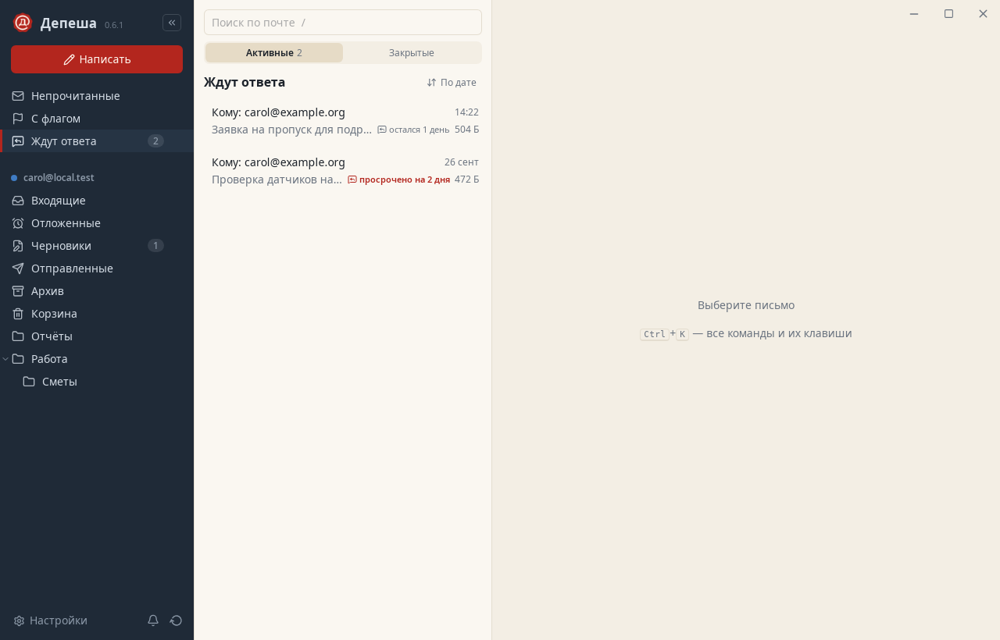

Почтовый клиент для компьютера
Почту можно
разобрать
Депеша держит письма людей и рассылки отдельно, откладывает нерешенное на потом и напомнит, если вы не ответили.
Бесплатно и с открытым кодом. Работает с любым IMAP/SMTP-сервером.
Сначала люди, потом рассылки
Рассылки и уведомления роботов Депеша узнаёт по заголовкам и показывает отдельно, а оповещения приходят только о письмах от людей.
- ГотовоПисьмо уходит в архив, и следующее открывается само.
- ОтложитьДо вечера, утра или понедельника. Вернётся непрочитанным.
- Ждут ответаНапомнит, если вам не ответили. Ответ придёт, напоминание исчезнет.
- Перед отправкойПроверит вложение, внешний адрес и тему, а десять секунд даст передумать.
